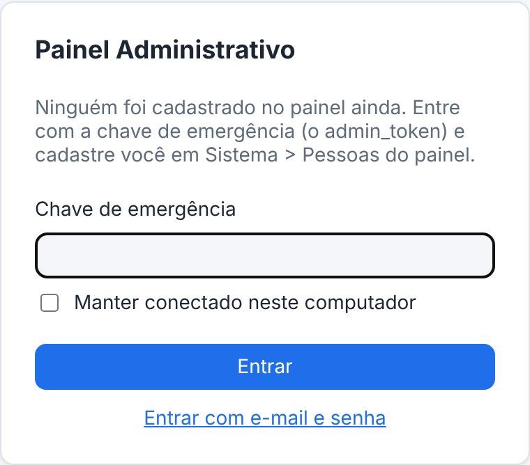
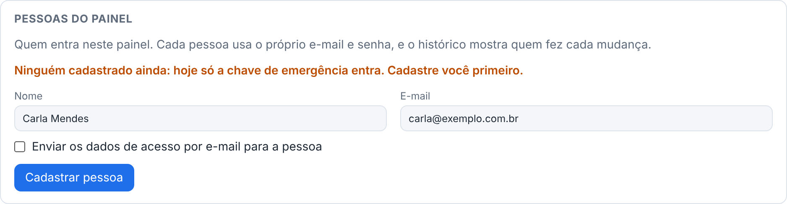
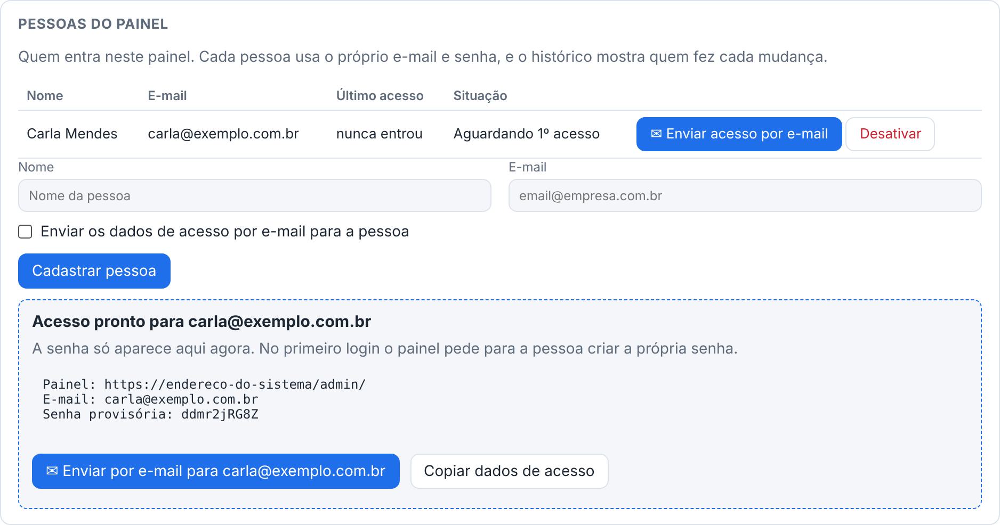
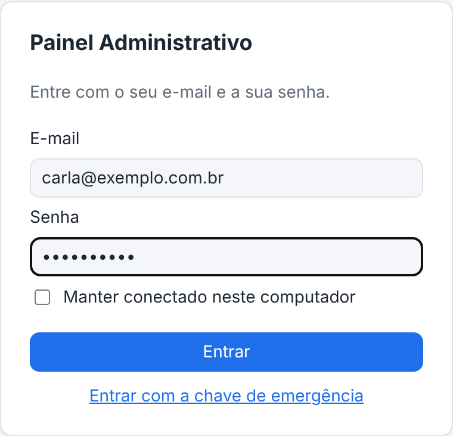
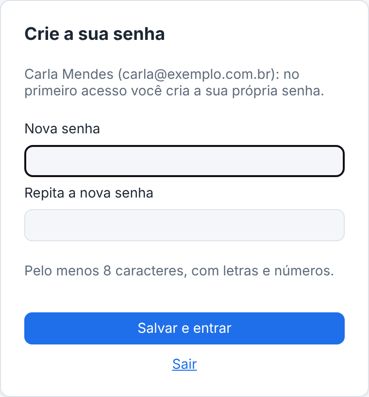

Entrar no painel e cadastrar a equipe
Cada pessoa da equipe entra com o próprio e-mail e senha. A chave de emergência é só para o começo ou para quando ninguém consegue entrar.
checklist Antes de começar
- O painel fica no endereço do sistema terminado em
/admin/. - Quem entra no painel é administrador da plataforma: vê todas as empresas e pode trocar o ambiente. Nenhum cliente deve ter acesso ao painel.
- A chave de emergência é o
admin_tokendo arquivo de configuração do servidor. Guarde em lugar seguro.
-
Primeira vez: entre com a chave de emergência
Quando ninguém foi cadastrado ainda, a tela já abre pedindo a chave de emergência. Cole a chave e clique em Entrar. Um aviso amarelo lembra de cadastrar as pessoas.

-
Cadastre você e a equipe
Clique em Sistema (no topo) e desça até Pessoas do painel. Preencha nome e e-mail e clique em Cadastrar pessoa.
Deixe marcado Enviar os dados de acesso por e-mail se o e-mail do sistema já estiver configurado. Se não, desmarque e use Copiar dados de acesso para mandar pelo WhatsApp.


A senha provisória aparece só agora. Depois, só gerando outra. -
Entre com e-mail e senha
A partir daí, cada pessoa entra com o próprio e-mail e a senha. No primeiro acesso o painel pede para criar a senha (mínimo de 8 caracteres, com letras e números).


Outras ações em "Pessoas do painel"
| Botão | O que faz |
|---|---|
| ✉ Enviar acesso por e-mail | Gera uma senha provisória nova e manda por e-mail. A senha antiga para de funcionar. |
| Desativar | A pessoa não entra mais no painel. Use quando alguém sai da equipe. |
| Trocar minha senha | Na sua própria linha (ou no botão com o seu nome, no topo). |
Se der errado
| O que aconteceu | O que fazer |
|---|---|
| Esqueci a minha senha do painel. | Peça a outra pessoa da equipe para clicar em ✉ Enviar acesso por e-mail na sua linha. Se ninguém consegue entrar, use a chave de emergência. |
| "Sessão encerrada. Entre de novo". | O login venceu. Entre de novo com e-mail e senha. |
| A pessoa aparece como Bloqueada (senhas erradas). | Espere alguns minutos ou envie um acesso novo para ela. |